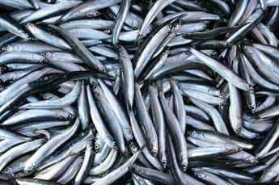

KARADENÝZ BÖLGESÝ HAYVANCILIK
Bölgede hayvancýlýk faaliyeti önemli bir ekonomik etkinliktir. Kýyý kesiminde bitki örtüsünün gür olmasý, yüksek dað çayýrlarýnýn bulunmasý ve arazinin engebeli olmasý ve nemli iklim nedeniyle büyükbaþ hayvancýlýk yapýlýr.
Bölgenin kuzeyindeki Karadeniz, balýk potansiyeli bakýmýndan zengindir. Türkiye balýk üretiminin yaklaþýk % 80'i Karadeniz'den karþýlanýr. Son yýllarda aþýrý avlanma ve denizin kirlenmesi nedeniyle balýk üretiminde düþme görülmüþtür. Karadeniz'de 200 m den daha derinlerde zehirli gazlar sebebiyle canlý hayatý yoktur.
Küçükbaþ hayvancýlýk bölgenin iç kesimlerindeki ovalarýn kenarlarýnda yaygýndýr.
Arýcýlýk faaliyetleri de bölgede geliþmiþtir. Özellikle Rize-Anzer yöresinin ballarý çok ünlüdür.
